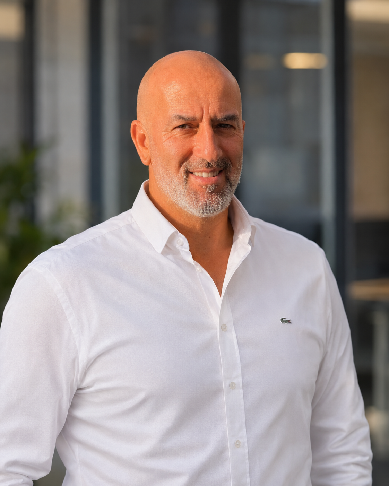

Endüstriyel ve Yapısal
Mekanik Sistemlerde
Güvenilir Çözüm Ortağınız
Gündoğdu Mekanik İnşaat olarak doğalgaz tesisatları, merkezi ısıtma sistemleri, soğutma ve yangın söndürme alanlarında proje, uygulama ve taahhüt hizmetleri sunuyoruz.
Tamamlanan Projelerimiz
Hakkımızda
Gündoğdu Mekanik İnşaat A.Ş., mekanik tesisat ve inşaat alanlarında faaliyet gösteren bir firmadır.
Doğalgaz tesisatları, merkezi ısıtma, soğutma ve iklimlendirme, yangın söndürme sistemleri ile endüstriyel borulama alanlarında proje, uygulama ve taahhüt hizmetleri sunmaktadır.
Çalışmalarında teknik gereklilikleri, iş güvenliğini ve uygulama kalitesini esas almaktadır.

GMIAŞükrü Kafaoğlu
Gündoğdu Mekanik İnşaat A.Ş.
Referanslar
Referans kataloğunu indir (PDF)Referanslar yükleniyor…
Projeniz için birlikte
çalışalım.
İhtiyaçlarınıza uygun mekanik tesisat çözümleri için bizimle iletişime geçin.
E-posta Gönder →